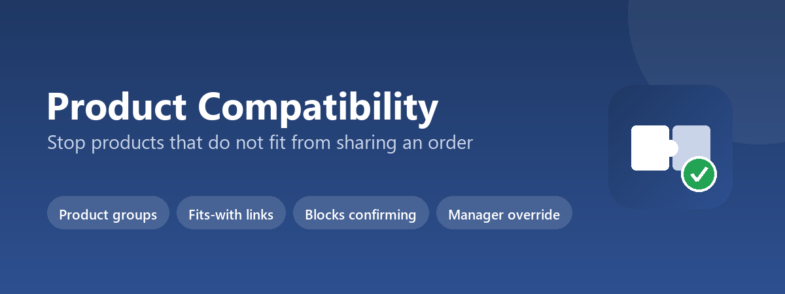

Stops products that do not fit together, such as a cup and the wrong-size lid, from being sold on the same order.
Put the products that must match in a compatibility group, for example Cups & Lids, and say on each product which ones it fits with. When a quotation holds two products of the same group that do not fit, a warning lists the mismatch and the compatible options. The order cannot be confirmed until it is fixed, unless a Sales Manager decides to confirm it anyway.
🧩 Compatibility groupsGroup the products that are checked against each other on an order, such as cups and lids. |
🔗 Fits with, both waysLink a product to the ones it fits with. A link always works in both directions, so you only set it once. |
⚠ Warning on quotationsA banner on the quotation lists every mismatch and suggests the compatible products. |
🔒 Confirmation blockedUsers cannot confirm an order while a mismatch remains, and the message tells them what to fix. |
🔑 Manager overrideA Sales Manager can confirm despite the mismatch, and the override is logged on the order. |
🎨 Works per variantSet what each variant fits with, so a 12oz cup and a 16oz cup of the same product can have different lids. |
Odoo 18.0 • Community & Enterprise • depends on Sales • Licence LGPL-3
Odoo implementation and development. thecodelegion.com